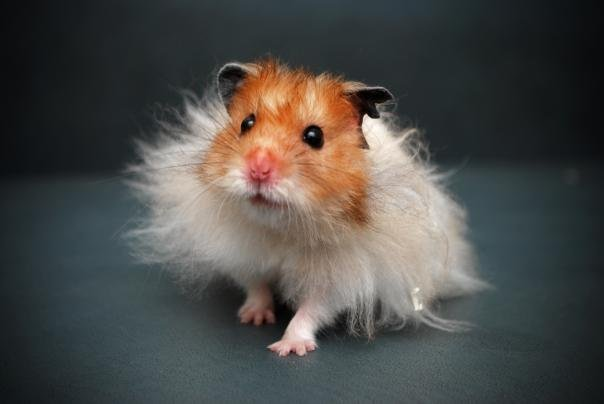

Chuột Hamster Winter White có nguồn gốc từ Châu Á nhưTrung Quốc, Kazakhstan và Mông Cổ.
Môi trường sống tự nhiên của hamster winter white thường được bao phủ bởi tuyết, đó là lý do tại sao chúng thích
nghi với khả năng thay đổi màu lông khi mùa đông đến gần.
Mặc dù ngụy trang như vậy, nhưng winter white hiếm khi sống quá 12 tháng tuổi trong tự nhiên và may mắn vượt qua
sinh nhật 6 tháng. Thú cưng của bạn chắc chắn sẽ biết ơn vì có một ngôi nhà ấm áp, an toàn và đầy yêu thương.
Chuột hamster winter white là loài động vật điềm đạm có thể được thuần hóa mà không gặp chút khó khăn nào. Khi
bạn đã thuần hóa thú cưng của mình, bạn sẽ có thể bế hamster winter white và vuốt ve nó bất cứ khi nào bạn muốn.
Chúng là một loài tương đối năng động, đó là lý do tại sao mua nhiều đồ chơi và một bánh xe tập thể dục.

Chuột Hamster Bear
còn được biết đến với tên gọi hamster Syria hoặc Golden hamster, là loài thuộc họ Cricetinae – một họ gặm nhấm
lớn với nhiều loài khác nhau. Trong số đó, chỉ tính riêng hamster đã có đến 25 loài thuộc 7 chi khác nhau bao
gồm cả hamster bear.
Hamster bear nổi bật với thân hình mập mạp, bốn chân ngắn nhưng chắc nịch và bàn chân tròn, rộng cùng móng vuốt
nhỏ và sắc nhọn có khả năng cầm nắm thức ăn chắc chắn, khả năng di chuyển nhanh nhẹn. Chuột có phần đầu khá nhỏ,
mắt to tròn, hai tai trên đỉnh đầu hình cánh hoa tulip nhỏ, nhiều lông. Phần đuôi mập và ngắn. Điểm đặc biệt của
loài chuột này chính là sở hữu hai túi má ở hai bên miệng phục vụ cho mục đích dự trữ hoặc mang thức ăn từ nơi
này sang nơi khác.

Hamster Robo là loại chuột nhỏ bé nhất và nhanh nhẹn nhất trong các loại Hamster.
Tính cách : Chuột hamster Rob bản tính hiền lành nên chúng là vật nuôi tốt. Tuy nhiên, các nhà khoa học đang
nghiên cứu về hamster Robo, gọi chúng là loài không thể thuần hóa vì chúng có thể không cố gắng cắn bạn, nhưng
chúng lại không quen với việc được bế hoặc ôm ấp.
Đặc điểm: Kích thước và tốc độ của chúng khiến chúng khó kiểm soát. Ngoài ra, hamster Robo còn được biết đến như
những nghệ sĩ trốn chạy vì chúng hoạt bát và nhanh nhẹn khi chạy khó bắt kịp.
Chuột hamster Robo thường tránh tiếp xúc với con người, ngay cả khi được tiếp xúc hàng ngày từ khi mới sinh.
Tuổi thọ : Trong điều kiện nuôi tốt nhất, tuổi thọ của chuột hamster Robo trung bình là 3 năm. Một số đã sống
đến 4 năm. Thời gian này dài hơn một chút so với mức trung bình đối với các giống hamster vật nuôi khác.

Hamster Campbell Nga còn có tên gọi khác là Dwarf Hamster. Những chú chuột này có thân
hình nhỏ nhắn phù hợp làm thú cưng trong gia đình.
Chú chuột này có phần đầu thủ nhỏ nhắn hình tròn. Đôi tai hình tam giác nhỏ nhắn được đặt trên phần cao nhất của
đỉnh đầu. Đôi mắt chú mèo này tròn vo nhìn như 2 viên đạn bi. Mắt màu đen tuyền không pha trộn chút màu sắc nào
khác. Mũi chú chuột này khá nhỏ có màu hồng. Điểm đặc biệt chính là hàm răng nhỏ nhắn nhưng cực kỳ chắc và nhọn.
Nhìn những chiếc răng của chúng liên tưởng đến những chiếc kim nhỏ được gắn lên nó.
Chúng là loài động vật sống về đêm nhưng chúng chúng hoạt động vào ban ngày nhưng thời gian rất ngắn. Thân hình
nhỏ nhắn nên bản tính khá nhẹ nhàng. Nhưng đôi lúc chúng cũng rất hung dữ cắn xé dữ dằn.
Không giống những như chú chuột khác Dwarf Hamster có tính bầy đàn khá cao. Nhờ thế chúng lúc nào cũng được giữ
hòa khí bạn bè. Ngoại hình chúng nhỏ nhắn nên không thích hợp cho những trẻ chơi.